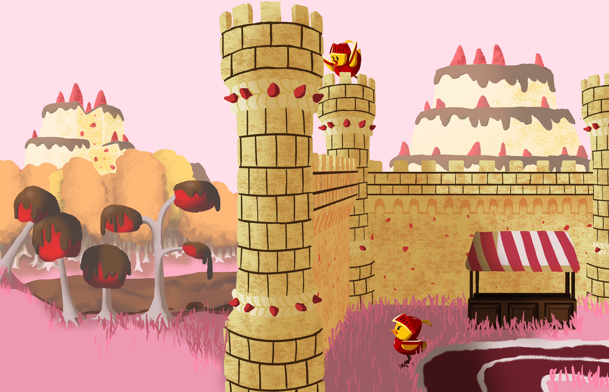
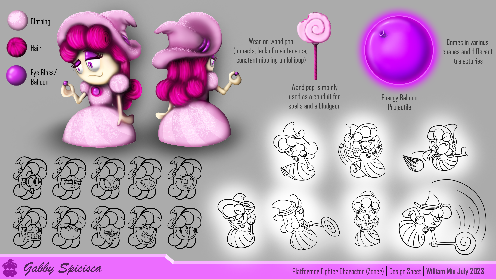
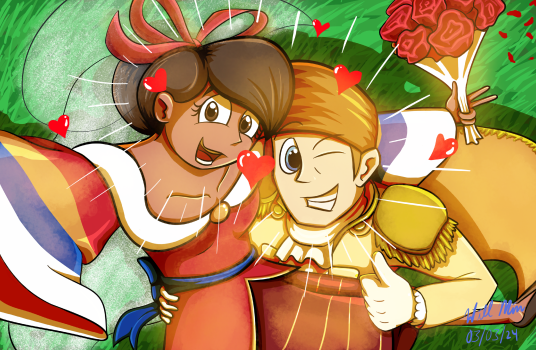
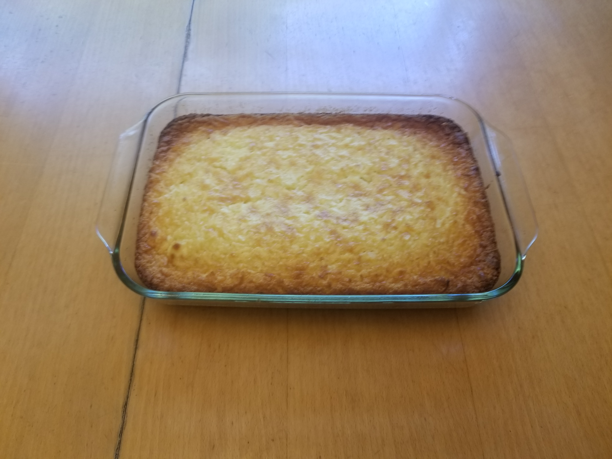
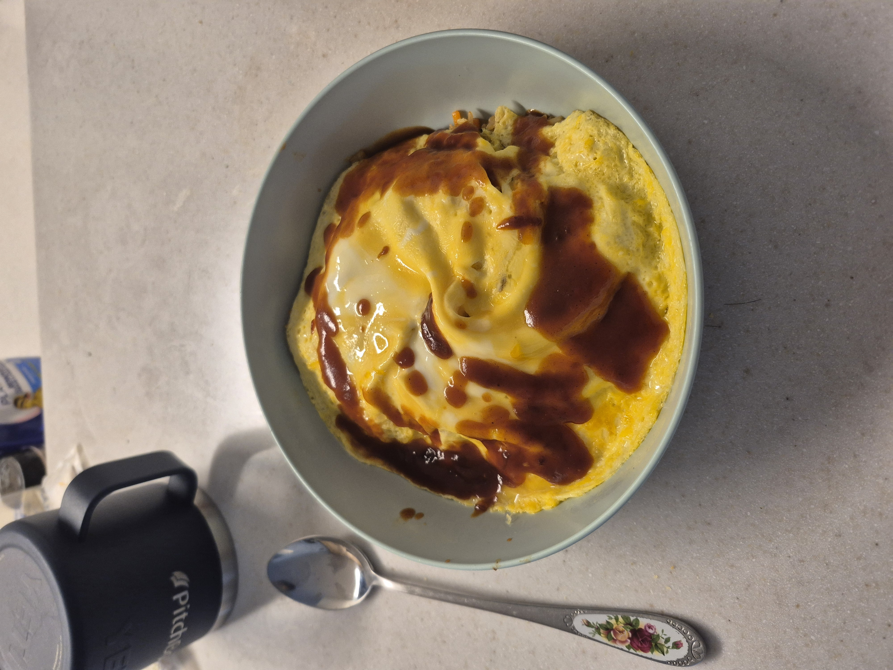
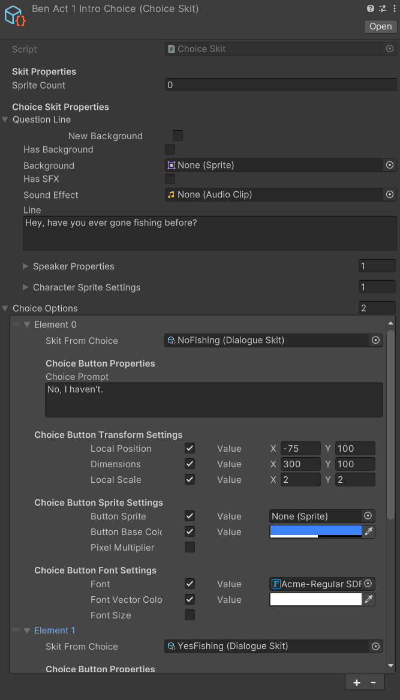

Projects Board

Buried in Love
How did I design and build a dialogue system for an interactive fiction game that streamlined modifying dialogue lines, character sprites, and transitions?
Read More →
How did I design and build a dialogue system for an interactive fiction game that streamlined modifying dialogue lines, character sprites, and transitions?
Read More →As a technical game designer, I design and build games that are easy to pick up but difficult to put down. I specialize in turning simple mechanics into deep, emergent player experiences. Whether playing, watching, or designing, I analyze how individual systems combine to create something greater than the sum of their parts.
Mechanically minded and technically grounded, I use Unity, C#, and generative AI to rapidly prototype and build scalable, flexible architecture that empowers smooth content production.
When I don't dissect and build game loops, I draw, cook, or sometimes go skiing or golding with friends.
Drawing & Sketching



Cooking


Skiing

Golfing
